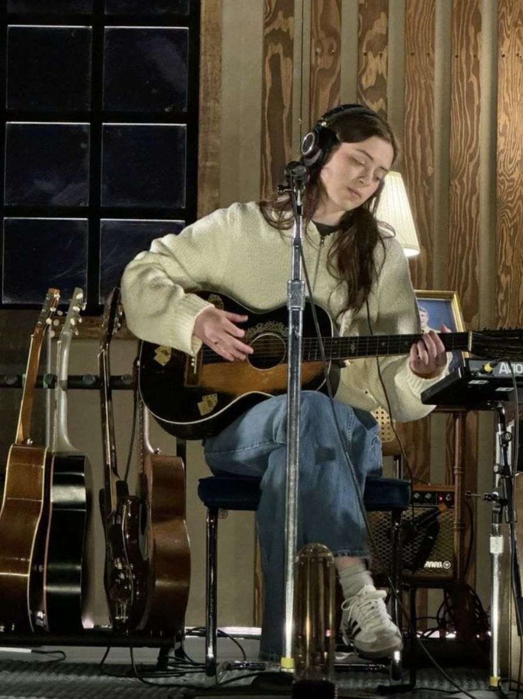

Music Industry Data
This visualization shows how music consumption has shifted across formats over the decades.

A popular indie musician and artist known for her emotional songwriting and captivating sound.

Elizabeth "Lizzy" McAlpine is an American singer-songwriter born on October 13, 1999, in Philadelphia, Pennsylvania. Known for her deeply emotional and introspective songwriting, Lizzy blends indie folk, pop, and alternative sounds into a style entirely her own.
Her music often explores themes of love, heartbreak, nostalgia, and self-discovery. With a voice that feels both intimate and powerful, Lizzy has carved out a unique space in the modern indie music landscape.
This visualization shows how music consumption has shifted across formats over the decades.